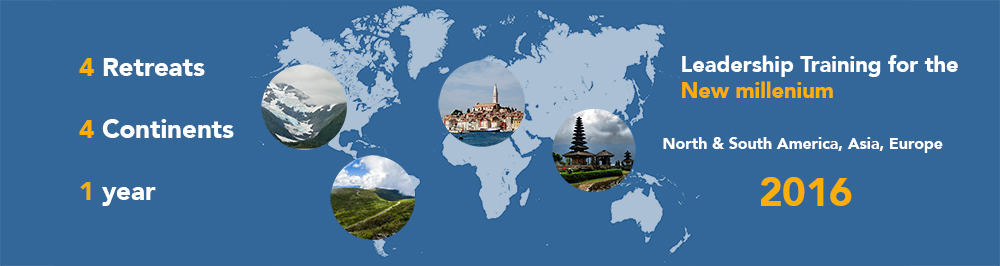

Leading for Innovation, Resilience, and the Nature of Risk
START WITH WHY...
“Organizations have grown skilled at developing individual leader competencies, but have mostly ignored the challenge of transforming their leader’s mind-set from one level to the next. Today’s horizontal development within a mind-set must give way to the vertical development of bigger minds.” --John McGuire and Gary Rhodes Transforming Your Leadership Culture, Center for Creative Leadership
“The overriding theme of what I’ve been hearing from clients recently is that they’re a bit stunned–shocked, actually–at how the leadership-development programs they’d had in place were not able to meet the needs of their business as we’ve gone through these tremendously disruptive economic changes over the past few years.” --Bill Pelster, Principal, Deloitte Consulting
“Many of our leadership programs are based on the faulty assumption that if we show people what to do, they can automatically do it.”--Marshall Goldsmith

WHAT
Leading edge capacity building for navigating complexity and uncertainty, innovation, and the self-knowledge that enables you to evolve into the leader you would like to be in the form of a three day in person executive leadership training program facilitated by leading global-thought-leaders and practitioners experienced in building leadership capacity.
WHERE
HOW
Developing the capacity for inner knowing, social-emotional skills, and navigating the world views of others through experiential engagement lead by Dr. Katia Petersen, Executive Director of Education at the Institute of Noetic Sciences and consultant to corporate change management processes, including the integration of Genentech and Roch. Dr. Petersen will
Developing the capacity to navigate the complexity of our capital markets in workshops lead by Nick Gogerty, advisor to hedge funds and the author of The Nature of Value and the soon-to-be published, the Nature of Risk.
Developing capacity to create a culture of innovation in workshops lead by Patricia Patton, executive leadership coach to LinkedIn founders, advisor to Prime Minister of Papua New Guinea, ??? in Washington DC, etc.
Developing capacity to engage in innovation based on proven cutting-edge tools and frameworks that have delivered value and contributed to increased revenue as well as market resilience for successful public companies, in workshops lead by Lina Constantinovici, innovation advisor to…